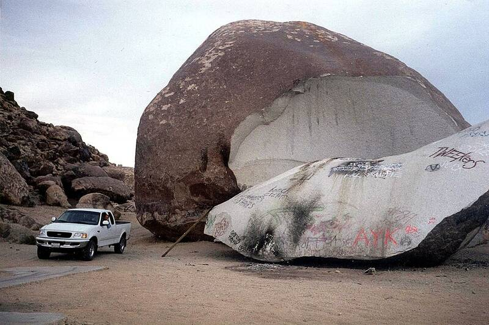

Giant Rock
Mojave Desert near Landers, California

A boulder covering about 5,800 square feet, said to be the largest freestanding boulder in North America. In the 1930s prospector Frank Critzer dug rooms under it; he died there in a dynamite blast in 1942 while police were investigating him. George Van Tassel leased the land in 1947, held Friday-night sessions in Critzer's rooms where he said he received telepathic messages from Venusians, and from 1953 hosted the Giant Rock Interplanetary Spacecraft Conventions nearby. The rock split in two in 2000. 1
Open in the interactive Watcher
Related
- George Van Tassel Person
- Nordics Person
Sources
- Giant Rock Wikipedia